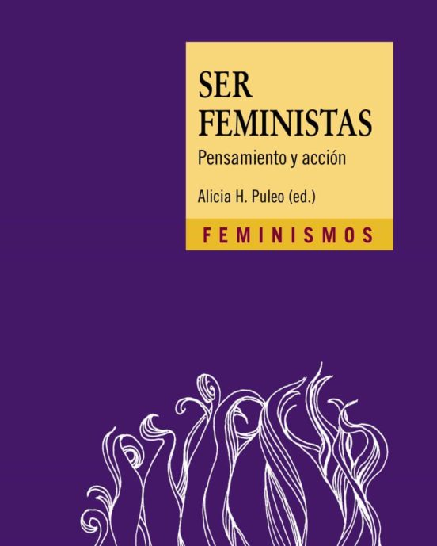
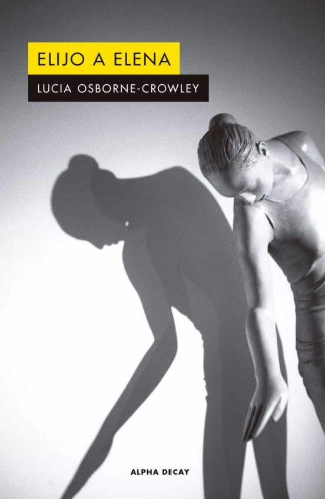
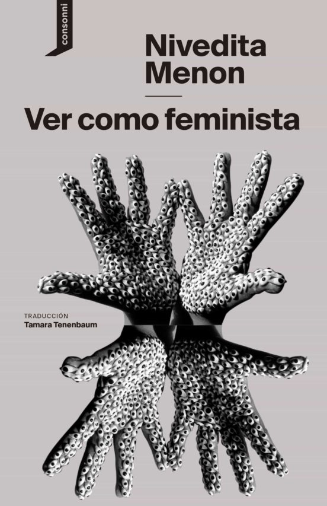

CATEGORÍA FEMINISMO
-

PERSÉPOLIS
SATRAPI, MARJANE
Persépolis nos cuenta la revolución islámica iraní vista desde los ojos de una niña que asiste atónita al cambio profundo que experimentan su país y su familia, mientras ella debe aprender a llevar el velo...
ver más -

SER FEMINISTAS
PULEO, ALICIA H.
Pensamiento y acción se unen y refuerzan mutuamente en el feminismo. Las consignas escritas de las pancartas y coreadas en las manifestaciones y los textos de las teóricas no son mundos separados. Por el contrario, son dos formas de la fuerza transformadora del mundo que llamamos "feminismo". ¿Qué puede ser mejor para festejar los 30 años de la Colección Feminismos que un libro aniversario en el que más de 40 autoras y autores de reconocido prestigio reflexionan a partir de lemas y citas que nos son familiares?
ver más -

ELIJO A ELENA
LUCIA OSBORNE-CROWLEY
A la edad de quince años, Lucia Osborne-Crowley tenía un espléndido futuro como gimnasta. Formaba parte del equipo nacional australiano, y estaba en camino de convertirse en competidora olímpica. Pero una noche, en Sídney, sufrió una brutal violación que la dejó gravemente enferma, y cuyas secuelas físicas y psicológicas arrastró durante mucho tiempo. Aunque pudo reconducir su carrera hacia el periodismo y la investigación, había una historia que nunca se atrevía a afrontar: la suya propia...
ver más -

VER COMO FEMINISTA
NIVEDITA MENON
Para la escritora Nivedita Menon, el feminismo no se trata de un triunfo final sobre el patriarcado, sino de una transformación gradual de la esfera social decisiva para que las antiguas estructuras e ideas cambien para siempre. Este libro reivindica el mundo a través de una lente feminista, entre la experiencia concreta de la dominación sobre las mujeres en India y los grandes desafíos del feminismo global. Desde las acusaciones de acoso sexual contra figuras de fama internacional hasta el reto...
ver más